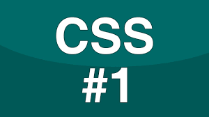

-
ORIGENES
CSS fue propuesto por Håkon Wium Lie en 1994 mientras trabajaba en el CERN, y su propuesta fue publicada oficialmente en diciembre de 1996 por el W3C (World Wide Web Consortium).
-
PRIMERA VERSION
CSS1: La primera versión oficial, CSS1, fue publicada en diciembre de 1996. Introdujo reglas básicas de estilo para texto, colores, márgenes y fuentes. Se centraba en la presentación visual de documentos HTML.
-
CSS2 (1998)
CSS2 se publicó en mayo de 1998 y amplió las capacidades de CSS1. Incluyó soporte para posicionamiento, media types (como impresión y pantallas), y más selectores. También introdujo la propiedad z-index.
.png)
-
CSS2.1 (2011)
CSS2.1 fue una actualización y revisión de CSS2, publicada en junio de 2011. Se enfocó en corregir errores y mejorar la interoperabilidad entre navegadores.
-
PRESENTE
CSS3 no se lanzó como una versión única, sino que se desarrolló en módulos. Esto permitió la introducción de nuevas características de manera más rápida y flexible. Introdujo propiedades avanzadas como bordes redondeados, sombras, gradientes, transiciones y animaciones. También se mejoró el diseño responsivo mediante el uso de media queries.